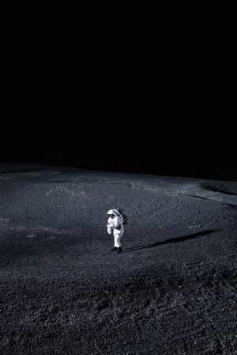
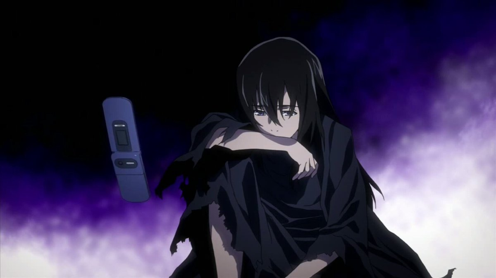

Questa sezione non sarà difficile da scrivere...
Sentirsi soli è una delle sensazioni più tristi, perché pensare di non avere nessuno accanto distrugge da dentro.
Certo, per qualcuno può essere uno slancio verso l'essere più forti e sicuri di sé, sentendosi meglio, ma non è certamente una colpa avere bisogno di qualcuno.

"We sometime think we really want to disappear, but all we want is to be
found
."
Sembrerebbe quasi la pagina di un narcisista, ma se ti senti sola sappi che non lo sei,
mai
.
Sai bene che se fosse per me potremmo vivere insieme in una qualche villetta sul mare con due pargoli (se vuoi dirmi come arrederesti casa, come educheresti i bambini, quali piante coltiveresti nell'orticello,
corri a sciverlo
), ma ovviamente la realtà è un'altra.

Sta di fatto che sola non lo sei, io non ti lascerò andare perché mi hai dimostrato di sapermi dare tanto amore quanto mai ne abbia ricevuto da qualcuno.
Per me sei tutto e di più e se ti senti sola, smettila perché se no ti ssspacco di botte.
... comunque spero ti piacciano le canzoni che ho scelto u.u